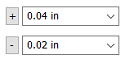

Tolerance dialog box
- Apply Tolerance
-
Applies the tolerance to the hole feature.
- Type
-
The available tolerance types are Standard Fit and Unit Tolerance.
- Hole
-
Sets the tolerance class for a hole. This option is available for the Type=Standard Fit.
- Shaft
-
Sets the tolerance class for a shaft. This option is available for the Type=Standard Fit.
- Upper Tolerance
-
Sets the primary upper tolerance value. This option is available for the Type=Unit Tolerance.
- Lower Tolerance
-
Sets the primary lower tolerance value. This option is available for the Type=Unit Tolerance.
- Upper Tolerance Sign (+)/Lower Tolerance Sign (-)
-
By default, the Upper Tolerance box displays the positive upper tolerance value, and the Lower Tolerance box displays the negative lower tolerance value.
You can use the Upper Tolerance Sign (+) button and the Lower Tolerance Sign (-) button to specify whether the tolerance value in the box is a positive value or a negative value. Selecting either button changes it from + to -, and from - to +.

Learn more
Hole typesHole extents
V bottom angles
Threaded holes
Saving commonly used hole parameters
Holes database
Look up more details
Hole Options dialog box (Simple)Hole Options dialog box (Threaded)
Hole Options dialog box (Counterbore)
Hole Options dialog box (Countersink)
Hole Options dialog box (Tapered)